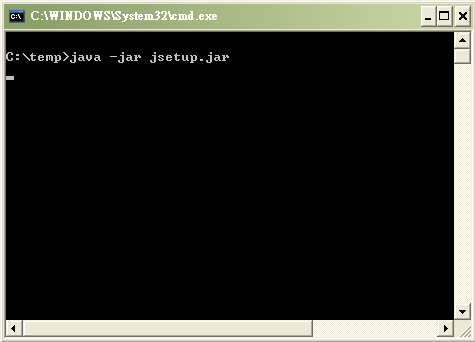
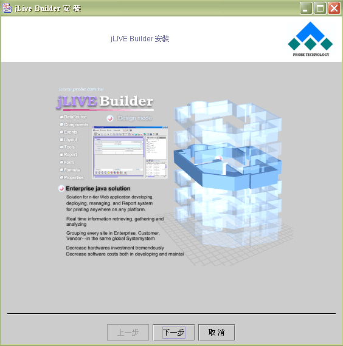
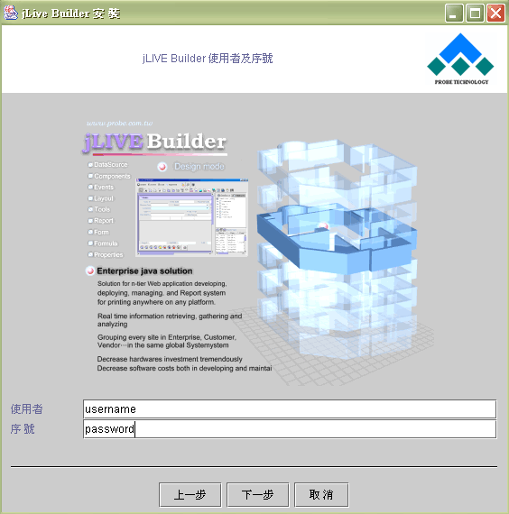
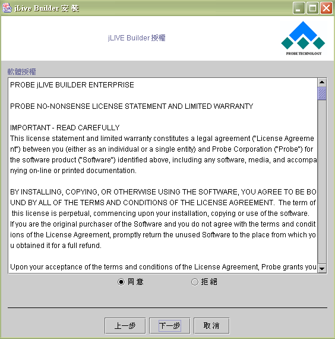
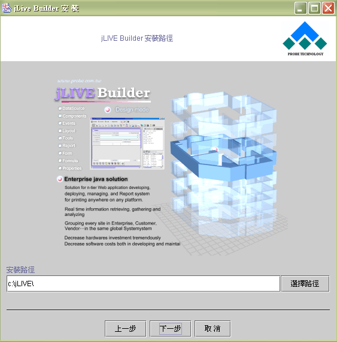
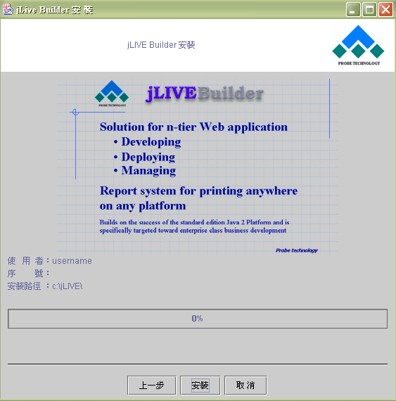
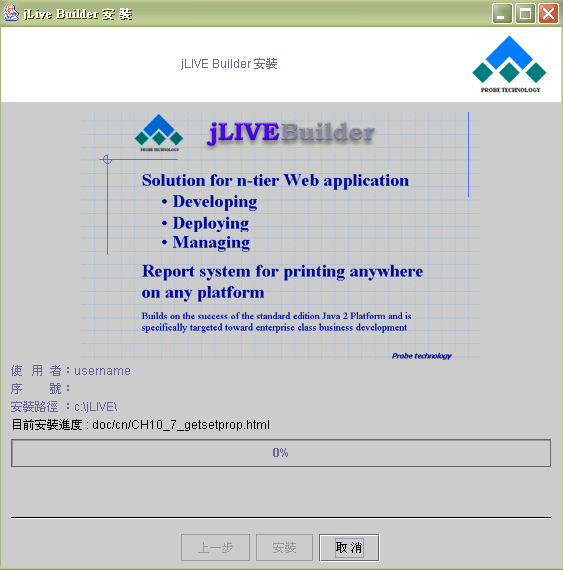
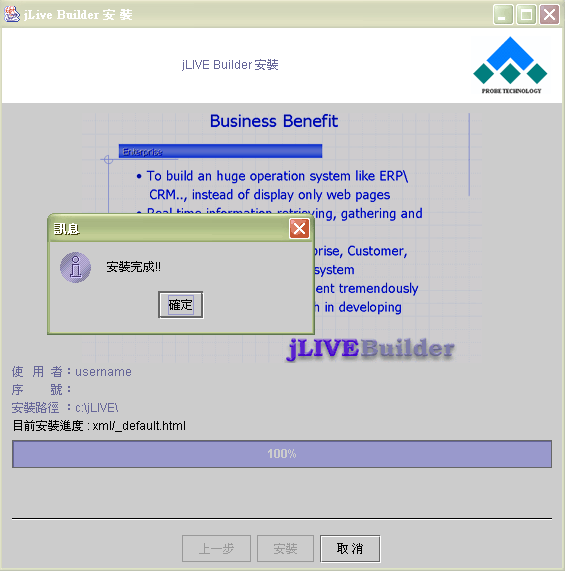
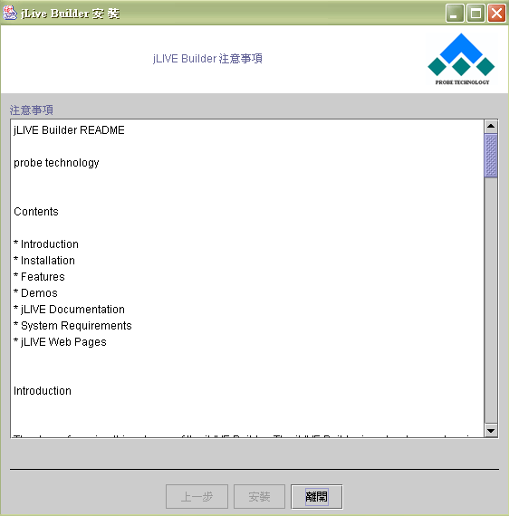

|

1.1
安裝與啟動 (Installation and getting start)
安裝 (Installation notes)
範例程式 (Execute sample
program)
Tomcat 4.0.x 啟動 (Start Tomcat)
JDBC 驅動程式 (IDBC drivers)
設計環境系統需求 (Minimum system requirements)
安裝 jLIVE Builder™ (Installation notes)
jLIVE Builder™ 支援最新版的 Java™2 開發環境，在安裝 jLIVE™ 之前必須先安裝 Java™2 SDK
， Java™2 SDK 是 Sun Microsystems™
, Inc. 公司的產品。相關的 Java™
版本、授權、聲明及安裝說明請參閱
Sun Microsystems™ , Inc. 下載網站的說明。
安裝的路徑請避免內含空白字元，例如：C:\Program Files\
， JDK 內含的某些工具軟體
(tools) 的作業環境變數
(environment variables) 可能產生不可預期的問題。
在安裝完 jLIVE Builder™ 後，將產生下列的目錄：
【】
-- 安裝時所選目錄名稱
【jLIVE】
【doc】
【images】
【jar】
【james】
【mysql】
【preloadimage】
【programs】
【jNorth】
【tomcat】
【xml】
啟動 jLIVE Builder™
前請確定以下環境已安裝或啟動就緒：
-
Java™ 1.4.x SDK 已安裝，JAVA_HOME 環境變數已正確設定。
-
啟動資料庫系統。
-
如果要測試範例程式，請先啟動 mySQL 資料庫。
-
啟動 jLIVE™ middle ware 。預設的 middle ware 安置於 Tomcat 4.0
，由 Tomcat 4.0 啟動服務。啟動
Tomcat 4.0 請執行 jLIVE\tomcat\bin\startup.bat
。並確定 JAVA_HOME 和 CATALINA_HOME 的環境變數已正確設定。
-
第一次執行 jLIVE Builder™ 時，系統將會重導範例程式的路徑至安裝路徑。
安裝步驟：
執行安裝光碟中的 Setup.bat ，當開始安裝程序時，會出現下列視窗。

步驟一：起始安裝畫面，點選下一步進行安裝。

步驟二：輸入使用者名稱及授權序號。

步驟三：確認授權聲明，同意按下一步。

步驟四：選擇安裝路徑 (預設路徑
C:\jLIVE)
，按【選擇路徑】開啟瀏覽訊息方塊 (dialog) ，或是直接輸入路徑。

步驟五：安裝設定確認，按【安裝】鍵進行安裝。

步驟六：安裝進度，顯示安裝進度。

步驟七：安裝完成，按【確定】。

步驟八：注意事項，按【離開】完成安裝。

▲Top
執行範例程式 (Execute sample
program)
jLIVE Builder™ 內含一範例應用程式，所使用的測試資料庫為 mySQL
。此程式僅供測試及展示使用。在安裝完 Java™
及 jLIVE Builder™ 後，請啟動 mySQL 資料庫系統。
-
啟動
mySQL ：
jLIVE\mysql\bin\winmysqladmin.exe。
-
啟動
Tomcat ：
jLIVE\tomcat\startup.bat。
-
可以直接執行 Java™ 可執行檔(jar file) jLIVE\programs\jNorth\jnorth.jar ，執行及操作的方式與一般的 Windows 程式一樣，以滑鼠雙擊 jnorth.jar 。或由瀏覽器 (Browser) 啟動執行，請在瀏覽器
(Browser) 的網址列輸入 HTML file (jLIVE\programs\jNorth\jnorth.html) 。亦可進入 jLIVE Builder™ 進一步編輯程式。
▲Top
Tomcat 4.0.x 啟動 (Start Tomcat)
Tomcat
版本：jakarta-tomcat-4.0.1 ， http://jakarta.apache.org/builds/jakarta-tomcat-4.0/release/v4.0.1/bin/
jLIVE
Builder™ Tomcat 路徑：jLIVE\tomcat。
在第一次啟動
Tomcat 前必須先設定 JAVA_HOME 和
CATALINA_HOME 環境變數。
環境變數 ( JAVA_HOME
和 CATALINA_HOME )
-
啟動及關閉 Tomcat (Start up and shut down the Tomcat)
-
啟動：執行
c:\jLIVE\tomcat\bin\startup.bat
。
-
關閉：執行
c:\jLIVE\tomcat\bin\shutdown.bat
。
-
Tomcat Troubleshooting
在 Windows 安裝 Tomcat 4.0 時常見的系統設定問題 :
1) 最常發生的問題，是 Tomcat HTTP 的預設 Port 8080 ，已經被其他的 Web server 伺服器所使用，例如： Oracle
9i 的 application server
。要改變預設的 Port ，請開啟：
$CATALINA_HOME/conf/server.xml
•••搜詢 '8080' ，更改為尚未被使用的 Port 。建議最好大於 1024
，詳細情形請參照各作業系統說明。
重新啟動 Tomcat 即可正常作業。必須注意當改變 Port 8080 後，程式在呼叫 Tomcat 服務的 URL 也要一併修改。例如：改 Port
為 1977 ，呼叫 Tomcat 服務的 URL 為 http://localhost:1977/
。
2) 在執行 Windows 9X/ME 的 batch file 啟動時出現 "
out of
environment space " 的錯誤。
以滑鼠右擊 STARTUP.BAT 和 SHUTDOWN.BAT 的圖示，選擇內容選單項目的【記憶體】設定頁，
將傳統記憶體的起始環境設定成
4096 。
確定或套用後， Windows
將會建立捷徑，可以此捷徑啟動或關閉 Tomcat 。
3) localhost 不存在 ('localhost' machine isn't found) ，這是因為使用 Proxy
的緣故。如果是在此情況下，必須要修改瀏覽器的 Proxy 設定，以避開 Proxy 主機。
使用 Netscape ，請編輯 Edit/preferences -> Advanced/proxies
。使用 Internet Explorer ，請編輯
Tools -> Internet Options -> Connections -> LAN Settings
。
▲Top
JDBC 驅動程式 (JDBC drivers)
jLIVE Builder™ 支援 JDBC 版本 2.0 API
。關於驅動程式的供應廠商及所支援資料庫系統等相關訊息，請參訪http://industry.java.sun.com/products/jdbc/drivers
。
jLIVE Builder™ 支援 JDBC TYPE 1, 2, 3, 4 的驅動程式。由於支援 TYPE 1 驅動程式，所以可以使用 JDBC-ODBC
bridge ，經由 ODBC 連結資料庫。但是 JDBC-ODBC bridge 的連結方式，除了效率非常不好外，
Java™
亦建議只使用於資料庫測試。若非得使用 JDBC-ODBC bridge ，可參閱網站 http://www.merant.com
，使用 Merant
公司所提供的 MERANT ODBC Driver Pack，該 Driver Pack 可以大幅提升 JDBC-ODBC bridge 的效率。
MSSQL Server 的使用者可以參訪 http://www.inetsoftware.de/ (i-NET Software
company) 網站，下載試用版的 MSSQL Server 驅動程式 (TYPE 4)
，此驅動程式的執行效率比 JDBC-ODBC bridge 好很多。
ORACLE 資料庫的使用者。在安裝完資料庫系統後，將其 JDBC Driver (classes12.jar) 安置於 Tomcat\lib 中，或設定 ClassPath 讓系統可以使用該驅動程式 (Driver)
，相關 JDBC Driver 設定安裝請參照 Oracle 手冊。 Oracle 8i
(8.16) JDBC Driver 無法使用 Database 的 Metadata
，請改用 8.17 版本， Oracle 9i JDBC Driver 必須
unpack 後只使用 JDBC Driver 部份，其餘相關 Java™ class 部份，因為 Java™ 版本之不同，或有不相容的問題，可能會導致驅動程式
(driver) 無法載入。
所有使用於 jLIVE Builder™ 的驅動程式，必須詳閱供應商所提供之設定資料，正確地安裝，使系統能使用該驅動程式。連結資料庫所需的 Database
URL format String 亦必須正確設定，才能建立起資料庫之連結。
安裝
jLIVE Builder™ 後，在 jLIVE/tomcat/common/lib/ 目錄下，已預載下列驅動程式，各驅動程式的版權及使用請參照廠商說明。
-
mysql-connector-java-3.0.14-production-bin.jar：mySQL 資料庫。
-
ojdbc14.jar：Oracle
資料庫。
-
mssqlserver.jar：MS sqlserver
資料庫。
-
Sprinta2000.jar：MS sqlserver
資料庫 i-net 公司測試版本。
驅動程式 (Driver) 設定範例：*' 為註解不需填入。
-
啟動 mySQL ：
jLIVE\mysql\bin\winmysqladmin.exe 。
-
啟動 jLIVE™ middle ware (執行 jLIVE\tomcat\startup.bat)
。
-
啟動 jLIVE Builder™ ，新增應用程式後，在資料庫選擇新增，並在設定頁設定下列屬性：
資料庫別名 (DB Alias) ：
MySQL_DB
**
驅動程式 (Driver)
：
com.mysql.jdbc.Driver
URL ：
jdbc:mysql://HostName:3306/DatabaseName?useUnicode=true&characterEncoding=Cp950
* 所有以上設定區分大小寫 (case sensitive)
。
** 您可鍵入任何屬意的資料庫別名 (DB Alias)
，系統將依此名稱參照存取此資料庫。
*** HostName
：安裝資料庫的主機名稱。
**** DatabaseName
：資料庫名稱。
-
存檔後，您可按測試連結鍵
(資料庫連結測試)，系統會回覆資料庫連結狀態及支援能力。
-
啟動 Oracle 資料庫。
-
啟動 jLIVE™
middle ware (執行 jLIVE\tomcat\startup.bat)
。
-
啟動 jLIVE Builder™ ，新增應用程式後，在資料庫選擇新增，並在設定頁設定下列屬性：
資料庫別名 (DB Alias) ：
ORACLE_DB **
驅動程式 (Driver) ：
oracle.jdbc.driver.OracleDriver
URL ：
jdbc:oracle:thin:@HostName:1521:DatabaseName
* 所有以上設定需區分大小寫 (case sensitive)
。
** 您可鍵入任何屬意的資料庫別名 (DB Alias)
，系統將依此名稱參照存取此資料庫。
*** HostName
：安裝資料庫的主機名稱。
**** DatabaseName
：資料庫名稱。
-
存檔後，您可按測試連結鍵
(資料庫連結測試)，系統會回覆資料庫連結狀態及支援能力。
-
按照 inet 的說明文件安裝 i-netSPRINTA 。
-
啟動 jLIVE™
middle ware (執行 jLIVE\tomcat\startup.bat)
。
-
啟動 jLIVE Builder™ ，新增應用程式後，在資料庫選擇新增，並在設定頁設定下列屬性：
資料庫別名 (DB Alias)
：
MSINET
**
驅動程式 (Driver) ：
com.inet.tds.TdsDriver
URL ：
jdbc:inetdae:HostName:1433?database=DatabaseName&charset=Cp950
* 所有以上設定需區分大小寫 (case sensitive)
。
** 您可鍵入任何屬意的資料庫別名 (DB Alias)
，系統將依此名稱參照存取此資料庫。
*** HostName
：安裝資料庫的主機名稱。
**** DatabaseName
：資料庫名稱。
***** Cp950 ：字元集 char set (Options)
，繁體中文 (Cp950 或 MS950)
，簡體中文 (GB2312) ，日文
(MS932) 。
-
存檔後，您可按測試連結鍵
(資料庫連結測試)，系統會回覆資料庫連結狀態及支援能力。
▲Top
系統需求 (Minimum system
requirements)
Intel Pentium/166Mhz or Compatible
Microsoft Windows 95/98 or NT 4 (SP3) or 2000/XP
64MB RAM, 256MB RAM Recommended
150MB Hard Disk space
CD-ROM Drive
SVGA or higher resolution (800x600, 256 Color)
Mouse or other pointing device
▲Top
Copyright © 2001~
2004 Probe Technology . All Rights Reserved.
Questions, comments,
and suggestions to Service@probe.com.tw
|